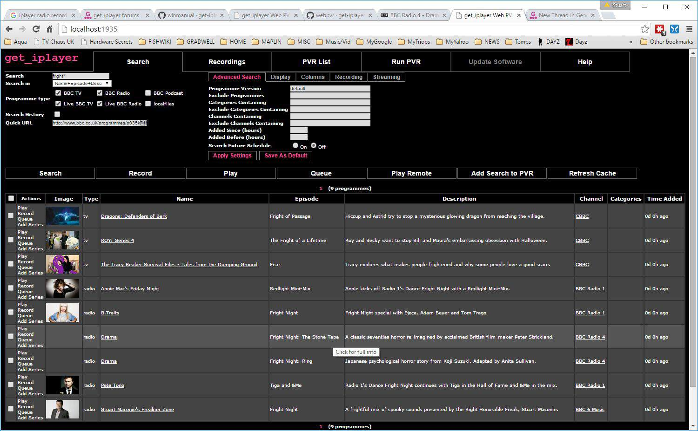
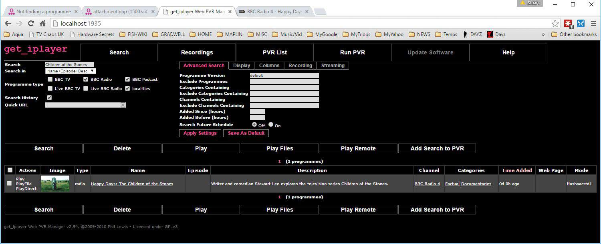

Oddly I can't get the get_iplayer V2.94 Web PVR on Windows to find a particular radio programme in 3D sound.
It's got a URL of
http://www.bbc.co.uk/programmes/p035k71h
But despite forcing a cache refresh or simply typing in 'drama' or 'fright' into the search (using name+episode+description) it doesn't list it.
It does find this one though....
http://www.bbc.co.uk/programmes/b06g63fh
Screenshot enclosed.

Bug?
So the bug is in the web PVR interface then? It can't seem to find it in order to download it.
From your screenshot it appears you were almost there. If you want to record the programme corresponding to the URL you pasted in the Quick URL box, what button do you think you should click? Hint: it's in the help page.
Sorry, I didn't make myself clear.
Yes, I know you can click on Search, play or record.
But I was performing a text search and it didn't find it.
Any idea why the text search didn't find the programme?
Quite a few I've discovered it can't find.
Try yourself to find via a text search of this programme -
http://www.bbc.co.uk/programmes/b01n1rbx
I tried, as per this screenshot. Not a thing.
(Sure if I've got the URL I can easily record it. but if I don't?)
P.S.
Oddly if I do perform a URL search and record it, the same text search
then finds it in localfiles or if its just BBCradio that is just ticked.

Seems we have a bug. :)
Have a read of the release notes and you'll see the difficulties that get_iplayer has had over the last 12 months with regard to the BBC removing feeds and scheduling data availability.
In your example above, the programme you linked to is older than 7 days, which the release notes specifically tell you will not be available in the search results (next release is due to introduce 30 day lookback).
As for the original issue, I'm not sure if that programme would make it to the scheduling info, it almost looks like a radio version of the 'red button' recordings you get on TV side of things which aren't picked up by get_iplayer - but I'll have to let someone else chime in to give more detail.
Quote:Yes, I know you can click on Search, play or record.
You cannot search for Quick URL values. You can only play or record, as described in the help page.
Quote:But I was performing a text search and it didn't find it.
You cannot search for web-only or red button programmes. Only programmes in the broadcast channel schedule listings will be indexed. This is described in the latest release notes for TV programmes, but the same restriction has always applied to radio programmes. The "missing" edition of The Stone Tape is a web-only offering.
Quote:Try yourself to find via a text search of this programme - http://www.bbc.co.uk/programmes/b01n1rbx
You cannot search for radio programmes broadcast > 7 days ago. As described in latest release notes, search results for TV programmes may include entries > 7 days old, but that has never been true for radio programmes. Your search result for Children of the Stones was as expected.
Quote:(Sure if I've got the URL I can easily record it. but if I don't?)
Use the iPlayer and iPlayer Radio sites to find the URL. If you can't find a programme there, you won't be able to download it with get_iplayer.
Quote:Oddly if I do perform a URL search and record it, the same text search then finds it in localfiles or if its just BBCradio that is just ticked.
Your screenshot shows that you searched in your Recordings list, where of course you're going to find the programme you just downloaded. That isn't the same as searching the programme data cache, and it has nothing to do with localfiles.
Quote:Seems we have a bug.
No we don't. get_iplayer is working as it should.
Thanks for the clarification. I didn't read any 'release notes'.
I guess I need to find out where they are kept as I can't find them in the GITHUB zip file release.
P.S.
Ah, found them -
Release Notes
Amazing. They're in the Wiki right here on this site. The link for the Wiki is on the top navigation bar.
Also, if you google "get_iplayer release notes", the top three results are to the notes here:
http://lmgtfy.com/?q=get_iplayer+release+notes
{kind=link}
{kind=link}
{kind=link}